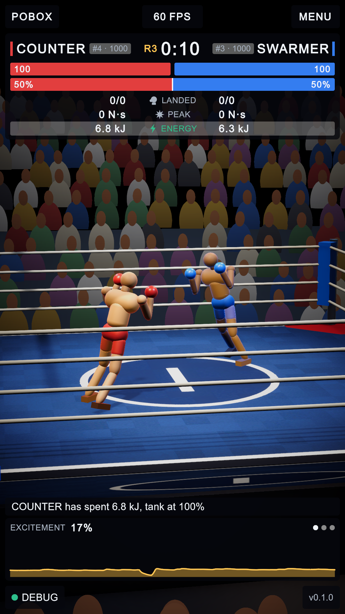
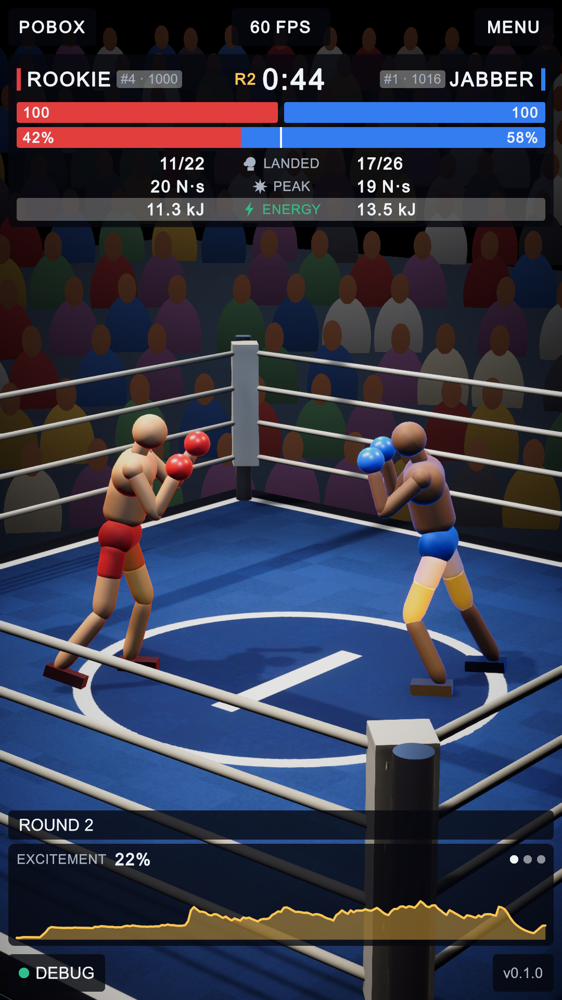
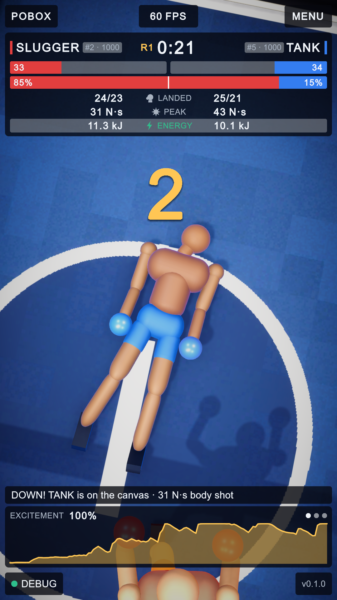
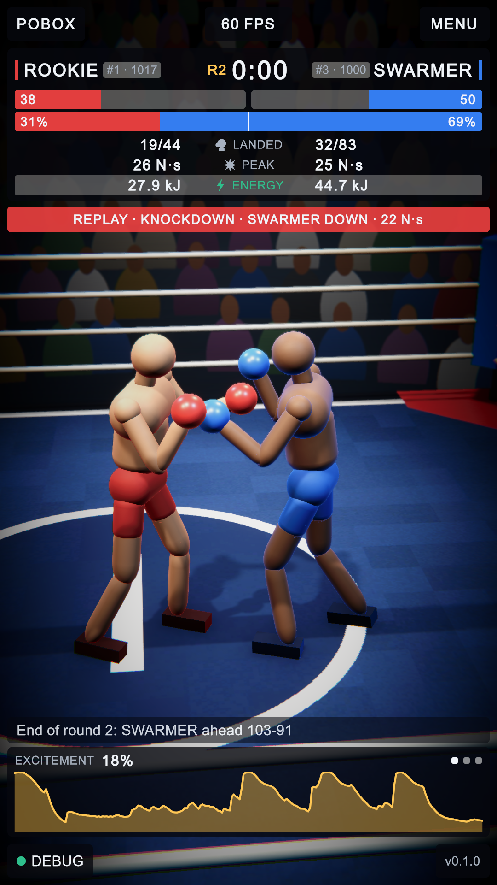
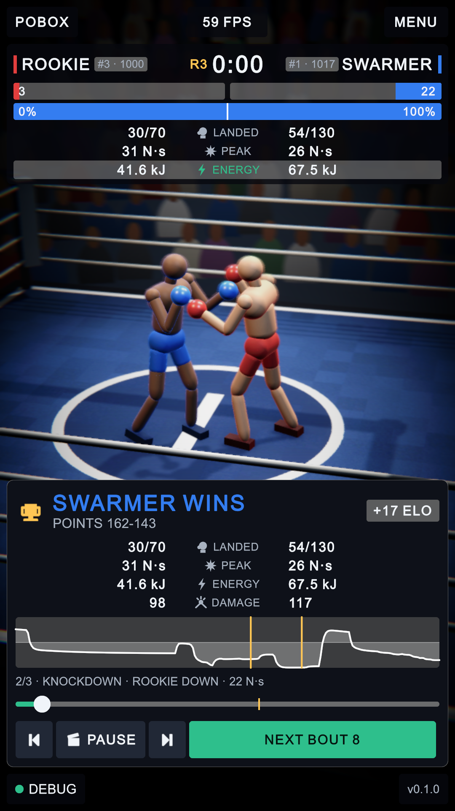
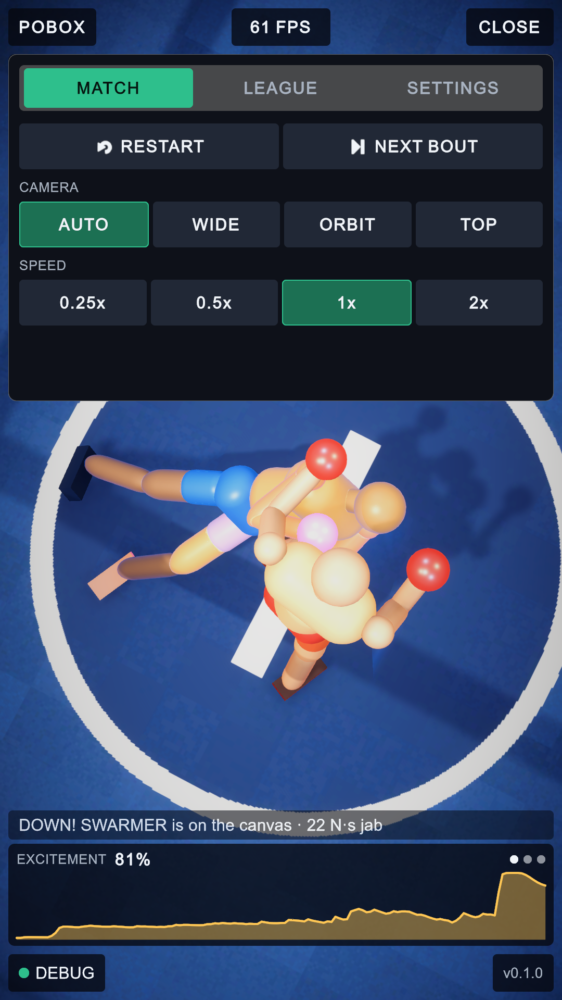
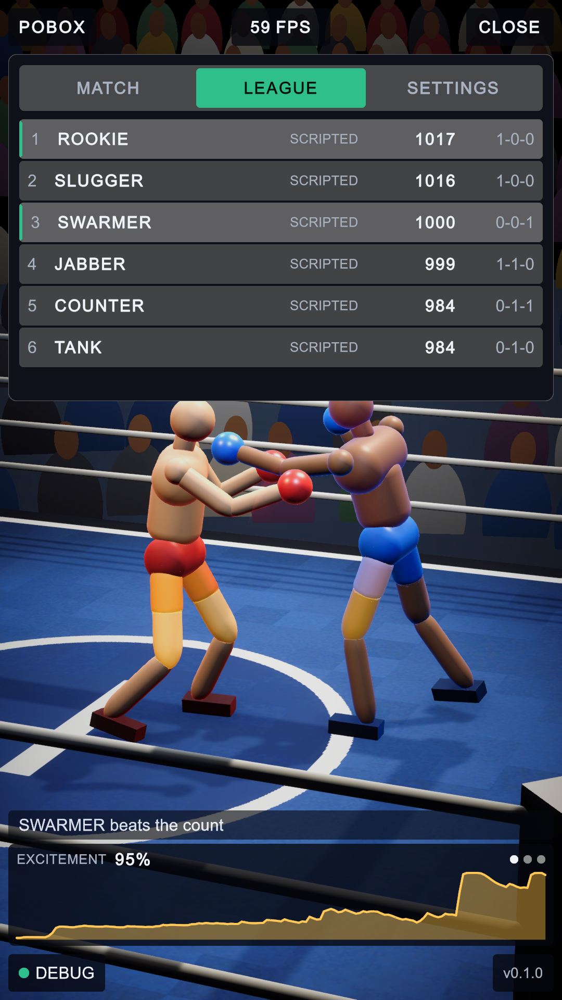
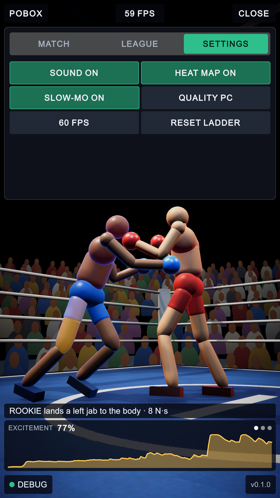
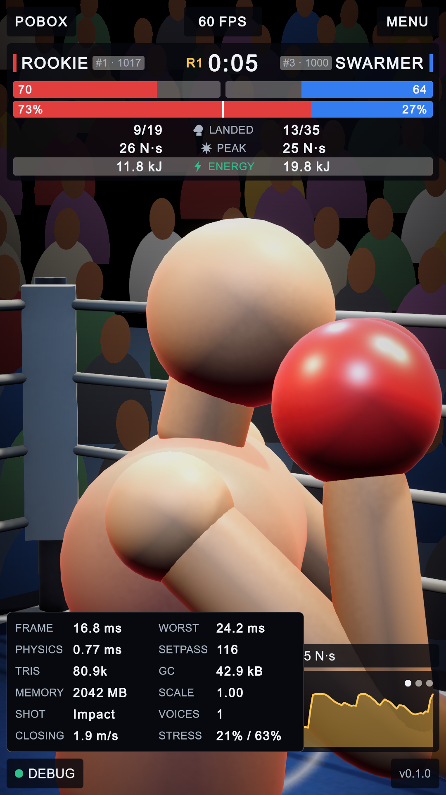
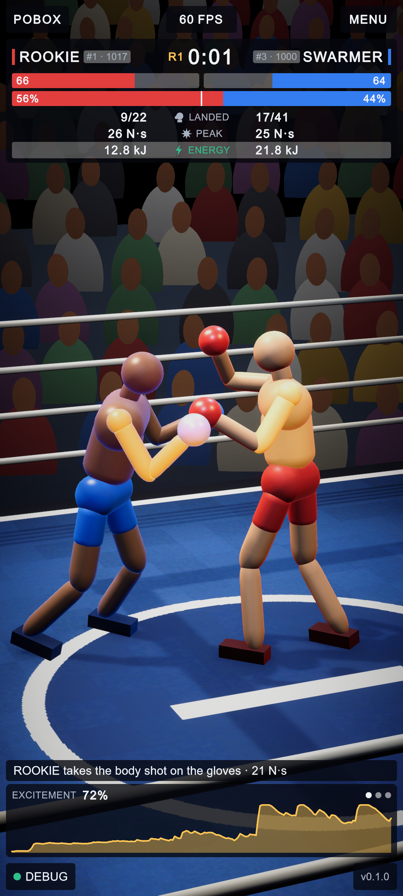

PoBox: first build
30 September 2026 · the interface before and after, with what changed marked on the pictures
The project had no interface at all that morning: no scenes, no scripts. So the honest "before" is an empty screen. The picture on the left below is the nearest thing to one: the very first time the new HUD drew, before anything had been tuned. The picture on the right is where it ended the day.
The fight screen

A B C D- The name SWARMER was 5 pixels too wide for its box and was being cut off. The layout check caught it.
- Everything reads zero: the fighters stood in their corners and never reached each other.
- The camera had backed off behind the crowd to fit two fighters standing far apart.
- The ropes cross straight over both fighters.

1 2 3 4 5 6 7 8 9 10 11- Top-left: the game's name.
- Top-centre: the frame rate. Tap it for the frame-time graph and the debug panel.
- Top-right: MENU.
- Bottom-left: DEBUG. The dot is green, amber or red by frame time.
- Bottom-right: the version.
- Health, one bar each, emptying towards the middle.
- Momentum: a tug of war. Red's share of the bar is red's chance as it stands.
- Tale of the tape, mirrored: one row serves both fighters, with an icon and a short word in the middle instead of a label each side.
- The green row cycles on a tap: energy, joint stress, balance, power. One row instead of four.
- Commentary: one line, written from the measured numbers.
- One graph, three pages (excitement, momentum, frame time). Swipe sideways or tap; nothing scrolls down.
Everything else opens over that screen
Nothing replaces the fight screen and nothing pushes it around. The menu, the debug readings and the result are each a panel laid over it, and the five corner items stay where they are throughout.








Does it all fit on one screen?
Checked by the game itself rather than by eye. The check walks every element on screen and counts anything outside the screen, anything that scrolls, any text smaller than 26 px (about the smallest a phone shows legibly), any label cut off by its box, and whether the five corner items are in their corners.
| Screen state | 720 x 1280 | 1080 x 1920 | 1080 x 2400 |
|---|---|---|---|
| Fight | pass | pass | pass |
| Menu: MATCH, LEAGUE, SETTINGS | pass | pass | pass |
| Debug panel open | pass | pass | pass |
| Results card | pass | pass | pass |
Every cell: off-screen 0, scrolling 0, small text 0, cut-off text 0, corners in place. The same check runs as an automated test (4 of 4 passing).
DOCS/README.md.